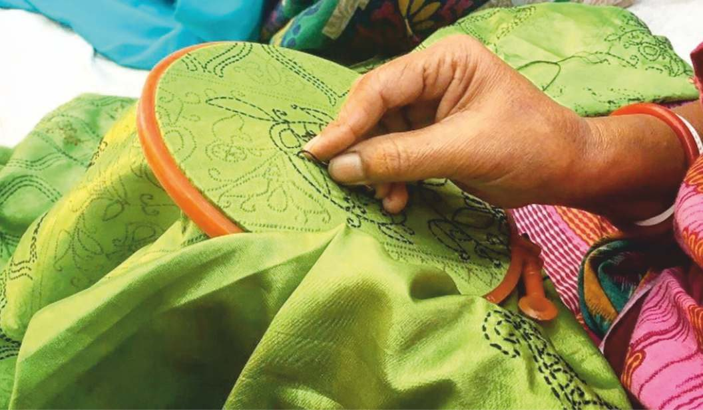
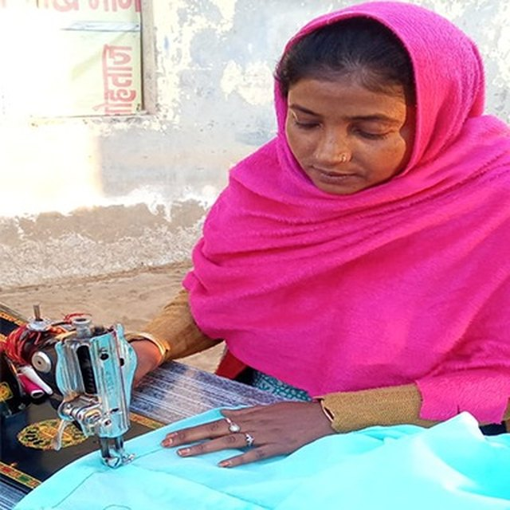
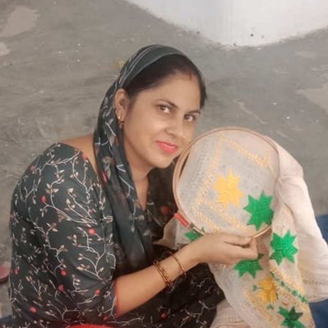
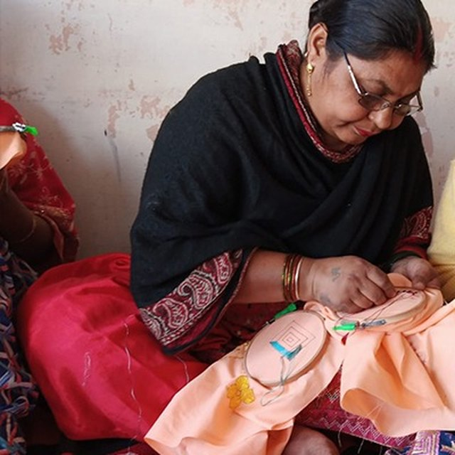
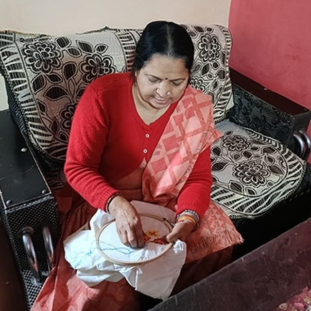
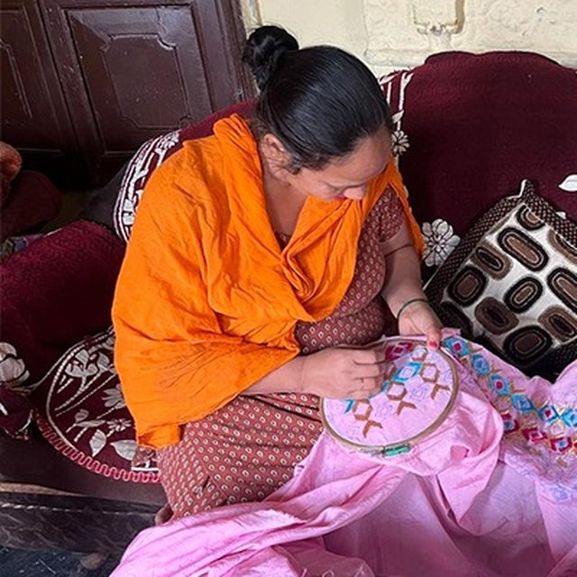

Success Stories
Behind every piece is a person. These are a few of the women whose hands carry this craft — in their own quiet, steady way.

Kiran
Kiran learned to sew the way many girls in her family did — sitting beside her mother, watching, then trying for herself. For a long time that skill stayed within the four walls of home.
Through PESHAS she found a place where it became work: regular orders, a fair price, and the quiet confidence that comes from being paid for what you do well. The pieces she finishes now travel far beyond her own street, and she speaks of her craft with a pride she did not have before.

Neha
Neha took to Phulkari quickly — the counting of stitches, the patience it asks for, the way a plain cloth slowly fills with colour. What changed for her was not only the embroidery but the company around it.
Working alongside other women in the cluster, she learns, earns and shares in equal measure. Steady work has let her add to her household in small but real ways, and to imagine a little more for herself and her children.

Rajni
Rajni has been embroidering for most of her life, long before anyone thought to call it a livelihood. Her hands know the work almost without looking.
Joining PESHAS gave that lifetime of skill a steady outlet and the dignity of being recognised for it. Younger women now learn by sitting beside her, just as she once learned — which makes her, in her own modest way, as much a teacher as a maker.

Rekha
Rekha fits her embroidery around the running of a home, the way so many women do — an hour in the morning, an evening here and there.
Through the cluster those hours add up to something that is hers: a contribution she values, earned on her own terms and close to her family, while still being part of something larger than her living room.

Sweta
Sweta is among the younger hands in the group, and she brings an easy energy to the work. She enjoys bright, modern colour as much as the older motifs, and is quick to try something new.
With training and a market to sell to, she has turned a craft she loves into earnings of her own — and a reason to keep the tradition growing in her generation.
Every purchase keeps these hands at work
When you choose something made here, you support the women who made it — and the tradition they are keeping alive.